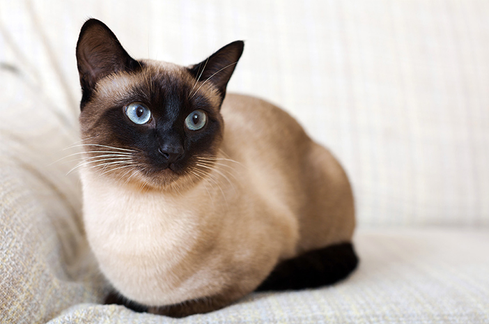

Mengenal Lebih Dekat Kucing Siam:
Kucing Siam berasal dari Thailand, yang dulunya dikenal sebagai Kerajaan Siam. Keberadaan kucing ini telah tercatat dalam manuskrip kuno Thailand sejak abad ke-14, menjadikannya salah satu ras kucing tertua. Kucing Siam dianggap sebagai hewan suci oleh keluarga kerajaan dan para biarawan, yang percaya bahwa jiwa orang yang meninggal akan pindah ke dalam tubuh kucing ini. Pada akhir abad ke-19, kucing Siam mulai dibawa ke Inggris dan Amerika Serikat, di mana popularitasnya langsung melonjak berkat penampilannya yang unik dan sifatnya yang cerdas.
Kembali